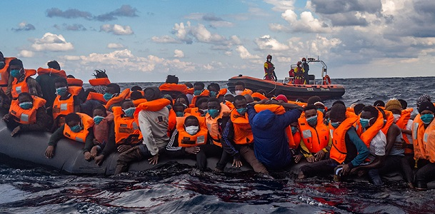

SOMOS OPEN ARMS
Open Arms es una organización humanitaria, no gubernamental y sin ánimo de lucro, cuya principal misión es proteger la vida de los más vulnerables en situaciones de emergencia. Nacemos de una empresa de socorrismo y salvamento marítimo con más de 20 años de experiencia en las costas del territorio español. Protegemos las vidas de las personas abandonadas en aguas internacionales que huyen de conflictos bélicos, persecución o pobreza y colaboramos en tierra firme con equipos sanitarios, y de investigación en primera línea para afrontar emergencias sanitarias o de cualquier otro tipo que precisen respuesta inmediata.
